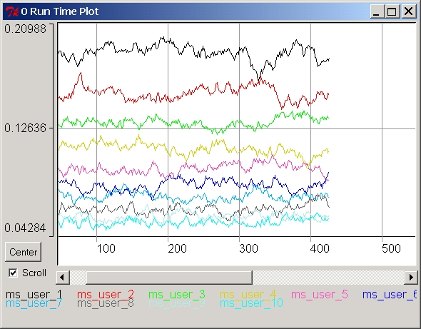

Runtime Plot
The Runtime Plot is a window created automatically during the
simulation
run to show the dynamic graph of a selected group of Variables or
Parameters.
Users need to specify which ones they want to appear on the Runtime
Plot
by selecting the Run Time option flag
from the main Browser.

The window for the Runtime Plot is automatically defined with the X dimensions containing the number of steps of the simulation, while the Y dimension depends on the maximum and the minimum values plotted. Note that the Y re-scaling "overshoots" slightly the max and min values to anticipate future values, so to reduce the number of re-scaling operations that slow down the simulation.
Users should select carefully which series are shown in the Run Time Plot. The rules are:
If the scroll option is
checked on the window automatically scrolls at each time step. Clicking
on the button Center the window scrolls
to show the current time step at about the beginning of the visible
portion.
The plot of the Runtime series can slow down the simulation. Minimizing this window increases sensibly the speed of the simulation program.
To avoid the Runtime Plot to appear, chose the entry Remove
Plot Flags in Menu Run. In particular, this is a good
option
in case of multiple simulation runs (see in Simulation
Settings in Menu Run), since this will create tens, or
hundreds
of windows. If the users has been already flooded with Runtime Plots,
then
the option Remove Runtime Plots
in
Menu Run will automatically destroy all these windows.